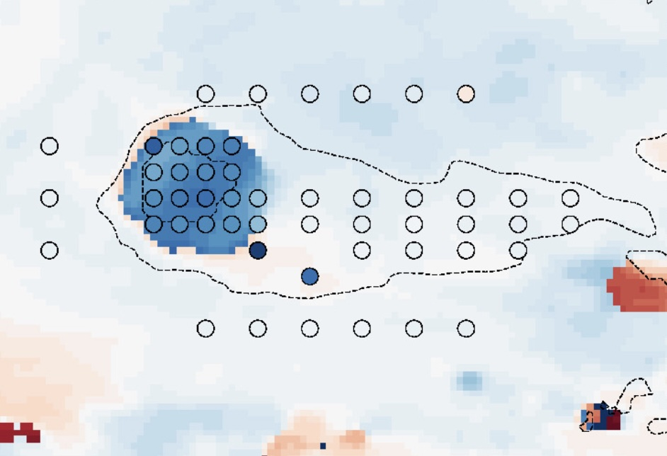
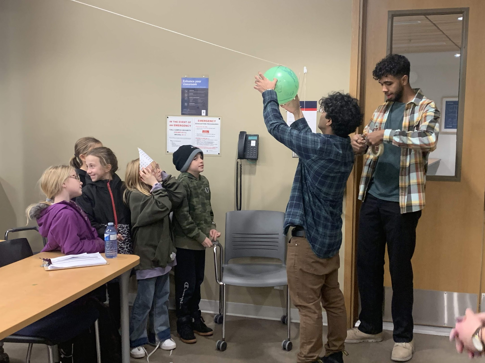
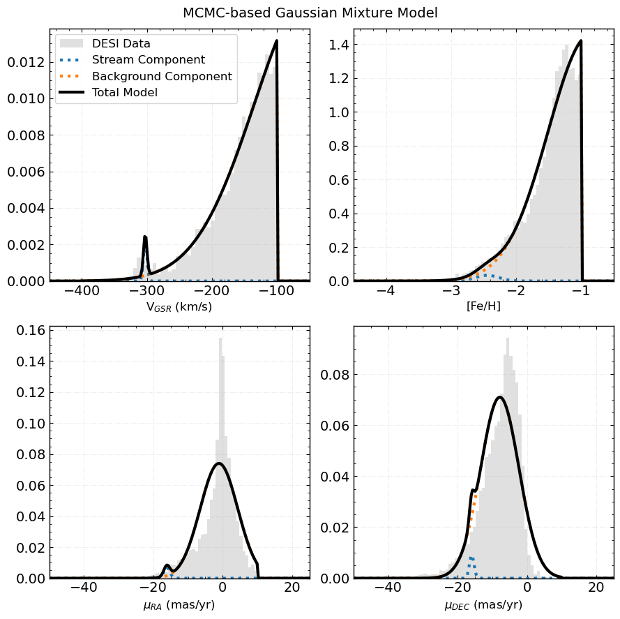
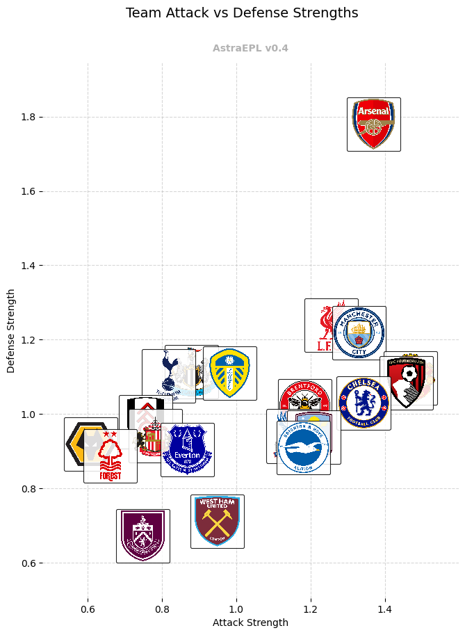
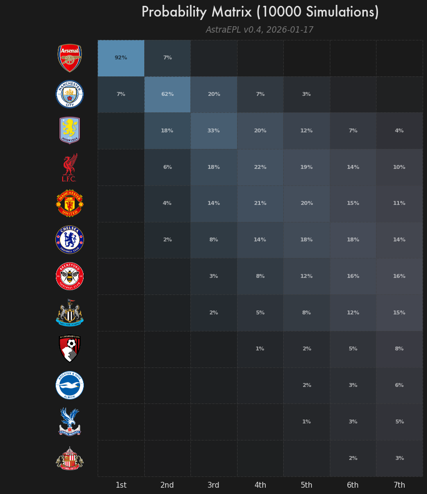

Observation Trip
Had the opportunity to observe at the Los Campanas Observatory in Chile 🇨🇱.
PhD Student at the University of Toronto
LSST DA Data Science Fellow 2025-2027
I am a second year PhD Student in the David A. Dunlap Department of Astronomy & Astrophysics. My current research aims to constrain dark matter and the evolution of our Milky Way through the study of Stellar Streams. My past work studied our polarized radio sky with the CHIME instrument as a part of the Global Magneto-Ionic Mapping Survey.
Had the opportunity to observe at the Los Campanas Observatory in Chile 🇨🇱.
CBC Toronto segment on Dunlap's watch party for the Rubin Observatory's First Look images.

Read more about N. Mohammed & Ordog et al. 2024

Highlights of recent public outreach efforts.
Milky Way-like galaxies evolved hierarchically, accreting mass through many mergers within a dark matter (DM) halo. Stellar streams are a result of this process; a host galaxy's potential disrupts satellites (dwarf galaxies, globular clusters) leading them to form tidal tails.
Artist depiction of stellar streams in orbit around host galaxy | from S5 Collaboration
Theories of cold and alternative DM disagree on predictions at the sub-galactic scale. Stellar streams offer a powerful means to indirectly constrain the DM substructure within the Milky Way.
However, to do this we need robust membership counts for stellar streams within our Galaxy. There are multiple ways to approach characterizing streams, but in this tutorial you will be walked through using finite mixture models to disentangle stellar streams from surrounding stars.
Mixture models are powerful statistical tools to describe a set of datapoints that come from different distinct populations, even if we can't directly observe which data points belong to which group.
In this tutorial, we will assume that the field of stars we narrow in on can be described by two distinct Gaussian populations: one for the stream, and one for the 'background' (non-stream stars).

Example truncated-Gaussian Mixture Model
We have to fit for the best mixture of models, and to do that we use Bayesian statistics.
$$P(\theta|D) = \frac{\mathcal{L}(D|\theta) \cdot P(\theta)}{P(D)}$$
Where $\mathcal{L}(D|\theta)$ is the likelihood function, $P(\theta)$ is the prior probability, and $P(D)$ is the evidence, with $\theta$ representing our model parameters and $D$ the observed data.
The probability of our model parameters given our observed data is equal to the likelihood of the data given the model parameters multiplied by the prior probability of the model parameters, divided by the probability of the data.
In practice, we can mostly ignore the evidence term ($P(D)$) since it is a constant.
To find the best-fitting parameters, we need to sample from the posterior distribution $P(\theta|D)$. This is where Markov Chain Monte Carlo (MCMC) comes in.
For mixture models, MCMC allows us to simultaneously fit:
The chain explores regions of parameter space with higher posterior probability more frequently, giving us both best-fit values and uncertainty estimates.
I have a tutorial on GitHub that you can use yourself to characterize stellar streams. Run the following terminal command in the directory you'll be working in:
git clone https://github.com/nassmohammed/DESI-DR1_streamTutorial.gitIncluded is:
data/ (small tutorial files), including dotter/, sf3_only_table.csv, and streamfinder_gaiadr3.fits*.py scripts powering the tutorialstreamTutorial.ipynb (the main notebook)env.yml (environment setup)Not included: mwsall-pix-iron.fits (12 GB DESI DR1 stellar catalogue data).
You can download from DESI (see the link in the tutorial) or from your terminal with:
curl -o mwsall-pix-iron.fits https://data.desi.lbl.gov/public/dr1/vac/dr1/mws/iron/v1.0/mwsall-pix-iron.fitsRead the DESI DR1 stellar catalogue overview. The corresponding paper (Kosposov et al. 2025) is here.
If space is a concern, contact ting [dot] li [at] astro [dot] utoronto [dot] ca to get set up on the Eridanus server (for 2025 EXPLORE participants).
Google collab notebook for running on weaker laptops.
conda env create -f env.ymlbackground = True: show the background stars in the figure for reference.
showStream = True: show STREAMFINDER stars, both those that have survived the cuts (as diamonds) and those cut out (as Xs).
show_sf_only = False: shows STREAMFINDER stars that are NOT IN DESI as hollow diamonds.
show_initial(\optimized\mcmc)_splines = True: shows the respective spline track on top of the figure.
plot_params: a dictionary to change plotting properties without editing the .py file.
Example usage:
plt_kin.plot_params['sf_in_desi']['alpha'] = 0.5
plt_kin.plot_params['sf_in_desi']['zorder'] = 10
plt_kin.plot_params['background']['alpha'] = 0.2
plt_kin.plot_params['background']['s'] = 1A: Don't waste your time. If you have difficulty spotting a stream in the trimmed data, so will the MCMC walkers. Try to adjust your cuts and compare with the location of SF stars.
A: It depends on your device. On Eridanus, 5000 burn-ins with 5000 iterations is about 20 minutes. On Google Colab, about an hour. On an M3 MacBook Pro, about 6 minutes.
A: Diagnostic plots help judge performance: chain plots (watch for hitting an invisible wall or never converging) and corner plots (look for symmetric, well-defined distributions).
@misc{DESI-DR1_streamTutorial,
author = {Nasser Mohammed},
title = {DESI-DR1\_streamTutorial},
year = {2025},
publisher = {GitHub},
journal = {GitHub repository},
howpublished = {\url{https://github.com/nassmohammed/DESI-DR1_streamTutorial}},
}Foreman-Mackey, D., Hogg, D. W., Lang, D., & Goodman, J. (2013). emcee: The MCMC Hammer. Publications of the Astronomical Society of the Pacific, 125(925), 306. https://doi.org/10.1086/670067
Ibata, R., et al. (2024). Charting the Galactic Acceleration Field. II. The Astrophysical Journal, 967(1), 89. https://doi.org/10.3847/1538-4357/ad382d
Koposov, S. E., et al. (2025). DESI Data Release 1: Stellar Catalogue. arXiv:2505.14787.
Mateu, C. (2023). galstreams. MNRAS, 520(4), 5225–5258. https://doi.org/10.1093/mnras/stad321
Thanks to the LSST-DA Data Science Fellowship Program, which is funded by LSST-DA, the Brinson Foundation, the WoodNext Foundation, and the Research Corporation for Science Advancement Foundation; participation in this program has benefited this work.
How does football/soccer/futbol (hereafter, simply "football") relate to astrophysics? You may see some novelty stats circular about how player X has scored every game played before sunset, or player Y concedes more fouls when Mars is in retrograde. That's the full (tenuous) extent to which astrophysics and football relate. However, with the recent push to implement data and statistics into football clubs' recruitment, team analysis, and more, the tools that are used to study both astrophysics and football have never been more similar.
Are you measuring the motion of a star across the sky, or a player across the pitch? Perhaps you're looking for an anomaly in a massive catalogue of astronomical survey data, or maybe the next Erling Haaland across the thousands of professional footballers across the world.
Let's say we want to find out how strong each team is in the English Premier League. How would you go about this? The simplest approach would be to go and look at the league table.
| Team | MP | GF | GA | Pts |
|---|---|---|---|---|
| Arsenal | 22 | 40 | 14 | 50 |
| Manchester City | 22 | 45 | 21 | 43 |
| Aston Villa | 22 | 33 | 25 | 43 |
| Liverpool | 22 | 33 | 29 | 36 |
| Manchester United | 22 | 38 | 32 | 35 |
| Chelsea | 22 | 36 | 24 | 34 |
| Brentford | 22 | 35 | 30 | 33 |
| Newcastle United | 22 | 32 | 27 | 33 |
| Sunderland | 22 | 23 | 23 | 33 |
Great, jobs done. Based on results, Arsenal are better than Manchester City are better than Aston Villa and so on. Might as well end the season here, right? Crown Arsenal their 4th league title and give the players and coaching staff an extended vacation ahead of the 26/27 season.
Now, a football fan who considers themselves a bit of an analyst may object, "Aston Villa have been really lucky this season and have overperformed their xG (Expected Goals)1, I think that Liverpool are a better side."
1 There have been endless articles on explaining xG, or Expected Goals, so I won't go into details. You can read more here.
This fan would have a point. Aston Villa have conceded roughly 9 goals less than they would be expected to based on xG models. Fewer goals conceded means they've irked out wins from what might have been draws, and draws from otherwise losses. This demonstrates the utility in Expected Goals data, which we can treat as the underlying signal to the noisy Real Goals scored.
| Team | MP | GF | GA | Pts | xG | xGA | xPTS |
|---|---|---|---|---|---|---|---|
| Arsenal | 22 | 40 | 14 | 50 | 44.33 | 17.97 | 47.70 |
| Manchester City | 22 | 45 | 21 | 43 | 43.96 | 27.10 | 41.86 |
| Manchester United | 22 | 38 | 32 | 35 | 44.42 | 29.00 | 38.57 |
| Liverpool | 22 | 33 | 29 | 36 | 38.90 | 27.42 | 37.97 |
| Newcastle United | 22 | 32 | 27 | 33 | 35.78 | 25.55 | 36.56 |
| Brentford | 22 | 35 | 30 | 33 | 40.71 | 30.58 | 35.58 |
| Bournemouth | 22 | 35 | 41 | 27 | 36.87 | 31.99 | 34.63 |
| Chelsea | 22 | 36 | 24 | 34 | 41.57 | 32.52 | 33.81 |
| Leeds | 22 | 30 | 37 | 25 | 33.76 | 30.89 | 33.32 |
| Crystal Palace | 22 | 23 | 25 | 28 | 37.18 | 32.93 | 32.42 |
| Brighton | 22 | 32 | 29 | 30 | 34.02 | 35.79 | 29.30 |
| Tottenham | 22 | 31 | 29 | 27 | 25.21 | 29.46 | 29.09 |
That's it then? Look at your xG tables and call it a day, argument settled?
Let's introduce a fan who is even more pedantic, perhaps an Aston Villa fan offended by their team no longer being in the top 10. "We've already had to face Arsenal home and away, once we play against relegation fodder2 we'd look better in the underlying numbers."
2 In the English Premier League, the bottom three placed teams get relegated to the second tier.
Though they are coping hard, this is a fair consideration. Maybe the best way to rank teams is by calculating how many goals they would be expected to score/concede against the average opponent. This is the philosophy around many football models, such as the Opta power rankings or the now-defunct FiveThirtyEight Soccer Power Index3. We would assume that Chelsea generating 3 xG against a weak defense wouldn't say as much about Chelsea's attacking prowess as would 3 xG against a strong defense. But we can't estimate Chelsea's attack in isolation, because every xG number they post depends on who they've faced, and we need a way to also estimate that team's defense. It feels circular, but we can exploit a common tools in the astronomer's toolset to untangle this mess: Bayesian inference.
3 First devised in 2009 by Nate Silver to rank international soccer.
Bayesian inference is based on Bayes' Theorem, which is often represented as
$$P(\theta|D) = \frac{P(D|\theta) \cdot P(\theta)}{P(D)}$$
with $\theta$ representing our model parameters and $D$ our data, and where $P(\theta|D)$ is called the "posterior distribution", $P(D|\theta)$ our "likelihood" of the data given our model, $P(\theta)$ the prior probability, and $P(D)$4 the "evidence" of our data.
4 We'll ignore the denominator since its role is to normalize the numerator. It becomes useful if we were performing model comparison.
In plain language, the probability of the model parameters given the data is equal to the product of the likelihood of the data given your model and the prior probability of your model, divided by the evidence for your data.
The problem is now to find a way to simultaneously model the strength of all 20 teams' attacks (which we'll call $\alpha_{\text{team}}$) and defenses ($\delta_{\text{team}}$). It also matters how strong a team's home advantage is, so we'll throw that in too and call it $\eta_{\text{team}}$. These are our model parameters $\theta$.
The data $D$ is the xG created by the home and away teams in every fixture played so far. For each match, we want the model to produce an underlying expected xG for each side, which I'll call xxG: what you'd expect them to generate against that opponent if you could replay the same game many times.
The key idea is simple: a team's xxG should go up if their attack is strong, go down if the opponent's defense is strong, and get a boost at home. One clean way to write that is
$$\text{xxG}_{\text{home}} = \exp(\alpha_h + \eta_h - \delta_a), \qquad \text{xxG}_{\text{away}} = \exp(\alpha_a - \delta_h)$$
where $\mu$ is a global baseline scoring level (depending on the season) and $H$ is a league-wide home-boost.
Next we need the likelihood. This will tell us how plausible a set of team parameters are given the xG generated in the match. If a match has the home team put up an xG score of 0.4 - 1.4, large $\alpha_{\text{home}}$ values would be viewed as less likely than lower ones.
Assuming the observed xG is a noisy draw around xxG, using a Gamma distribution (positive values, with some spread):
$$\text{xG}_{\text{home}} \sim \mathrm{Gamma}\left(\phi,\ \text{scale}=\frac{\text{xxG}_{\text{home}}}{\phi}\right), \qquad \text{xG}_{\text{away}} \sim \mathrm{Gamma}\left(\phi,\ \text{scale}=\frac{\text{xxG}_{\text{away}}}{\phi}\right)$$
Lets spell it out one more time: if the model predicts $\text{xxG}_{\text{home}}=2.0$ and the match xG comes in at 2.1, that set of parameters gets rewarded with a high likelihood; if the match comes in at 0.3, it gets penalized.
We also have prior information from clubs' respective historical success, wage bill, and squad experience, that some teams' attacks and defenses would likely be higher (for example, we'd expect Arsenal to score more goals in a season than Sunderland even before a single match has been played). We incorporate this prior belief as the prior probability, $P(\theta)$, in Bayes' theorem.
To combine the likelihood and the priors, we don't usually try to solve for the posterior distribution $P(\theta|D)$ in closed form. Instead we sample from it. Any astronomer would be familiar with the Markov Chain Monte Carlo (MCMC) python implementation from Foreman-Mackey et al. (2013)5. The idea of MCMC is to start with an initial guess for all parameters, then repeatedly propose tweaks to those values. For each proposed set of parameters we calculate the posterior probability. By "walking" across the posterior space, we get many draws rather than one best answer. This means we can say not just what Arsenal's attack strength probably is, but how confident we are.
5 emcee.readthedocs.io/en/stable/index.html
Overall strength (attack + defense + 50% home):
1. Arsenal 3.657
2. Manchester City 3.076
3. Manchester United 3.028
4. Liverpool 2.956
----------------------------------------
5. Bournemouth 2.873
6. Chelsea 2.853
7. Brentford 2.789
8. Newcastle United 2.770
9. Leeds 2.685
10. Crystal Palace 2.637
----------------------------------------
11. Aston Villa 2.610
12. Brighton 2.542
13. Tottenham 2.397
14. Fulham 2.306
15. Everton 2.292
----------------------------------------
16. Sunderland 2.237
17. Nottingham Forest 2.228
18. Wolves 2.091
19. West Ham 2.074
20. Burnley 1.879Sorry Villians6, you still fall short of the top half, and way below your 3rd place in real matches played.
6 Nickname for Aston Villa supporters.
If we're interested in which teams have the best attacks/defenses, we can visualize a scatter plot with attack strength on the x-axis and defense on the y-axis. From this, we see that Arsenal's success can be attributed to their anomalous defense strength, and that you should count on Burnley conceding plenty of goals.

One last thing we can do now that we have our team strengths is to then simulate fixtures. Going back to our formula for calculating xxG, we can plug in any home/away team and get estimations from win/draw/lose probabilities to clean sheet odds and more.
============================================================
Manchester United (H) vs Arsenal (A)
10,000 simulations
============================================================
Expected goals: 1.18 - 1.66
Win probabilities:
Manchester United 27.9%
Draw 23.8%
Arsenal 48.3%
Most likely scorelines:
1-1 (11%)
0-1 (10%)
1-2 (9%)
============================================================Furthermore, we can run simulations for the entire rest of the season to predict what the final table would look like based on our team strength mode:
Pos Team Pts +/- GD Top4 Rel Champ
---------------------------------------------------------------------------
1 * Arsenal 84.0 4.7 +45.7 100% 0% 92%
2 * Manchester City 73.2 5.0 +37.6 96% 0% 7%
3 * Aston Villa 66.4 5.2 +10.8 63% 0% 0%
4 * Liverpool 64.3 5.2 +13.8 49% 0% 0%
--------------------------------------------------------------------------- Champions League
5 * Manchester United 63.4 5.2 +16.7 44% 0% 0%
6 * Chelsea 61.0 5.1 +20.3 27% 0% 0%
--------------------------------------------------------------------------- Europa League
7 Brentford 59.0 5.0 +11.8 14% 0% 0%
8 Newcastle United 55.5 5.0 +7.9 4% 0% 0%
9 Crystal Palace 51.5 5.0 +0.3 1% 0% 0%
10 Bournemouth 51.4 5.1 -0.0 1% 0% 0%
11 Sunderland 51.1 4.9 -6.7 1% 0% 0%
12 Brighton 50.9 5.1 +2.1 1% 0% 0%
13 Leeds 49.9 5.1 -2.4 0% 0% 0%
14 Fulham 49.4 4.9 -7.2 0% 0% 0%
15 Tottenham 47.0 5.0 -1.0 0% 0% 0%
16 Everton 46.0 4.9 -10.9 0% 1% 0%
17 Nottingham Forest 38.3 4.8 -23.0 0% 13% 0%
--------------------------------------------------------------------------- Relegation Zone
18 West Ham 30.5 4.6 -37.1 0% 89% 0%
19 Burnley 25.4 4.4 -39.8 0% 98% 0%
20 Wolves 21.2 4.6 -38.9 0% 99% 0%So that Aston Villa fan can breathe, your team's most likely position at the end of the season is 3rd place! Goes to show that what matters most is having points on the board. I'll wrap up by giving you a more nuanced visualization of the season simulation:

Post Date: January 24th, 2026.